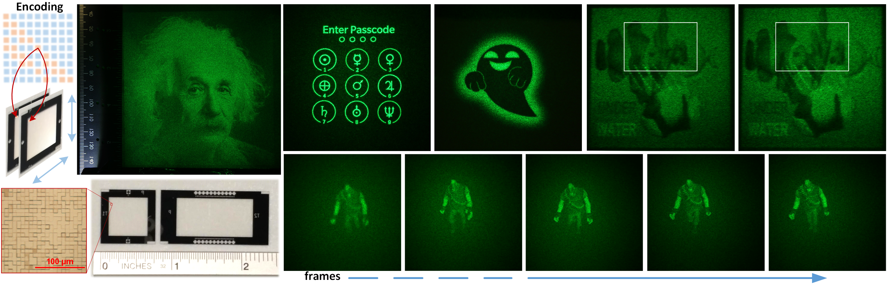

Mix-and-Match Holography
for Diffractive Displays
Yifan (Evan) Peng,
Xiong Dun,
Qilin Sun,
Wolfgang Heidrich
A project collaborated with The University of British Columbia (UBC), accepted to ACM SIGGRAPH Asia 2017

Overview of mix-and-match holography. We computationally
design pairs of diffractive optical elements that encode multiple
holograms or target images under different geometric alignments
or DOE pairings (left). By changing the geometric alignment or
pairing different DOEs, the individual encoded holograms can be
de-multiplexed. Illumination with a pre-determined lighting
condition produces the corresponding target image (right),
that can be generalized in a wide range of scenarios. The
design process makes use of a combination of iterative phase
retrieval methods and complex matrix factorization.
Abstract
Computational caustics and light steering displays offer a wide range
of interesting applications, ranging from art works and architectural
installations to energy efficient HDR projection. In this work we
expand on this concept by encoding several caustic designs into pairs
of front and rear phase-distorting surfaces.
Different target holograms can be decoded by mixing and
matching different front and rear surfaces under specific geometric
alignments. Our approach, which we call mix-and-match holography, is
made possible by moving from a refractive caustic image formation
process to a diffractive, holographic one. This provides the extra
bandwidth that is required to multiplex several images into pairing
surfaces.
We derive a detailed image formation model for the setting of
diffractive displays, as well as a multiplexing method based on a
combination of phase retrieval methods and complex matrix
factorization. We demonstrate several application scenarios in both
simulation and physical prototypes.
Paper and supplementary
Paper
paper: Appearing soon!
Supplementary
supplementary: Appearing soon!
Video
video: Appearing soon!
All images are © ACM 2017, reproduced here by permission of ACM for your personal use. Not for redistribution.